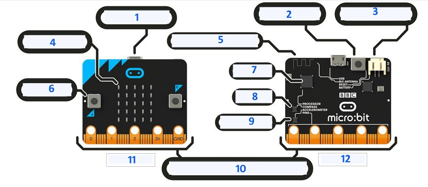
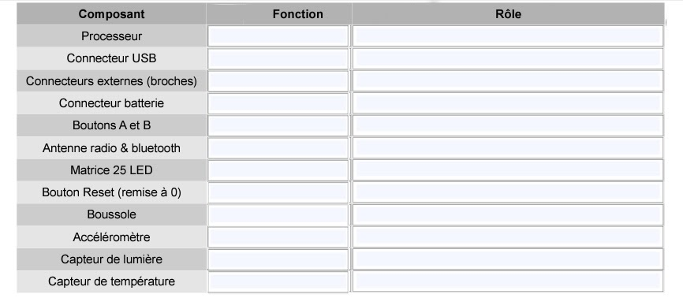
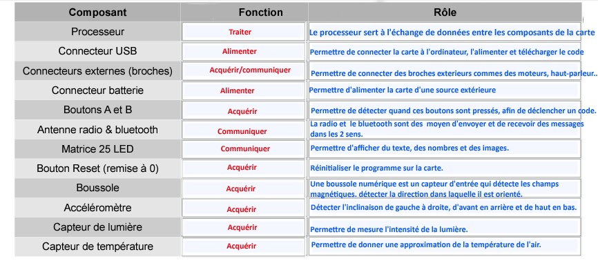

Séance 1: La carte micro:bit
Peut-on programmer un micro-ordinateur de poche ?
Il existe des ordinateurs si petits qu'ils tiennent dans la poche, les smartphones, mais aussi des micro-ordinateurs plus simples et beaucoup moins coûteux que l'on peut s'amuser à programmer pour créer des tas d'applications. Nous allons en tester un.
Introduction:
La carte à microcontrôleur conçue en 2015 par la BBC : le « micro:bit ». Cette carte électronique de seulement 5 cm sur 4 et ne coûtant pas chère comporte suffisamment de composants pour être considérer comme un micro-ordinateur et pour permettre s’initier à la programmation.
Travail:
1. De quoi est composé le micro:bit ?
En vous aidant du site officiel (https://archive.microbit.org/fr/guide/features/), complétez le dessin ci-dessous en y notant les noms des composants du micro:bit en français.

2. A quoi servent ces composants ?
Toujours en vous aidant du site officiel (https://archive.microbit.org/fr/guide/features/), tracez un tableau contenant les composants de la carte ainsi que la fonction (acquérir, traiter, communiquer, alimenter, distribuer, convertir ou transmettre) et le role de chacun des composants.

Correction

🧠 Teste tes connaissances
Réponds aux questions puis clique sur « Vérifier » — la correction s'affiche aussitôt.
1. Par qui et en quelle année la carte micro:bit a-t-elle été conçue ?
2. Quelles sont approximativement les dimensions de la carte micro:bit ?
3. Pourquoi le micro:bit peut-il être considéré comme un micro-ordinateur ?
4. D'après le texte, quel est un exemple d'ordinateur si petit qu'il tient dans la poche ?